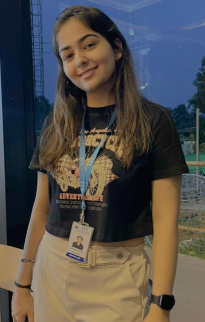

Ashna Sachdeva

Summary
Energetic and aspiring third-year student pursuing a degree in Vellore Institute of Technology with a deep-rooted passion for software engineering. A dedicated
learner and problem solver, equipped with a strong foundation in programming and a keen interest in staying updated with the latest technological trends. Seeking
opportunities to leverage my academic achievements and technical skills to contribute to real-world software development projects and drive innovation in the
industry
Education
- B.Tech in Computer Science and Engineering
Vellore Institute of Technology, Chennai • 8.59 CGPA • 2025
- XII
Delhi Public School, Sonipat • 93.6% • 2021
- X
Delhi Public School, Sonipat • 91.6% • 2019
Projects
- Dice Rolling Simulator(C)
- A basic software that imitates the act of rolling a dice a designated amount of times. It produces random numbers within the range of 1 to 6, replicating the motion of
a conventional six-sided dice.
- Tic Tac Toe Game(C)
- A version of the well-known Tic Tac Toe game designed for two players. Participants alternate marking spots on a 3x3 grid. The player who successfully arranges
three of their marks in a row, column, or diagonal is declared the winner.
- Simple Alarm Clock(C)
- A software for setting alarm times (hours and minutes) that triggers an alert when the designated time is reached. The program remains inactive until the specified
time is reached, at which point it activates the alarm to notify the user.
- Rock-Paper-Scissors Game(C)
- A text-based game in which a player competes against the computer through multiple rounds, making choices between rock, paper, or scissors. The outcome of each
round determines the winner, and the ultimate champion is determined either after a selected number of rounds or when the player decides to conclude the game.
- Simple Calculator(Cpp)
- The C++ calculator application utilizes classes and functions to structure its operations. It gathers user input to specify an operation, and subsequently employs the
selected method to exhibit the outcome.
- Basic Graphics Drawing Tool(Cpp)
- The provided C++ software presents a basic console-based tool for creating textual graphics, enabling users to sketch lines on a canvas within the console. It offers a
simplified approach to depicting shapes and engaging without relying on graphical libraries.
- Graphic Designing
- Design Head of the university's 'The White Helmets' (a social club) and 'Dream Merchant' (a financial club).
- Participated as a design team member in numerous clubs, generating posters, logos, and various graphic elements to
support club activities.
Certifications
- WEBVERSE
- Vellore Institute of Technology • 2023
Participation Certificate of a Hackathon in web development.
- KRYPTHON
- Vellore Institute of Technology • 2022
Certificate of appreciation for being selected as one of the top 20 finalist in Hackathon conducted by Android and Zero
Bugs Club.
- GRADIENT
- Vellore Institute of Technology • 2022
Participation certificate of gradient, a UI/UX design contest presented by Android Club.
Skills
- Programming Languages: C/C++, HTML
- Database: MySQL
- Operating Systems: Windows, Linux
- Software: Visual Studio Code
- Data Structures and Algorithms
- Graphic Designing: Photoshop, Canva
- UI/UX Design
Other